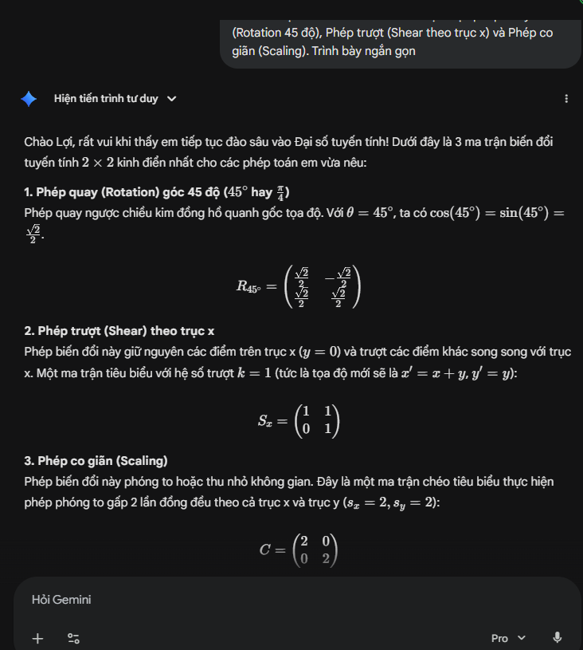
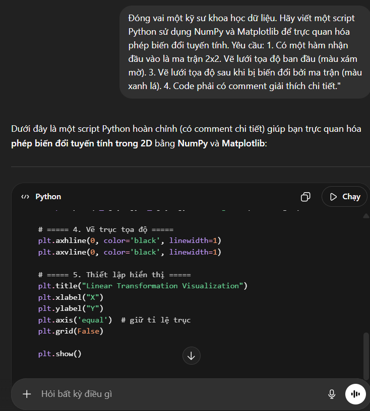
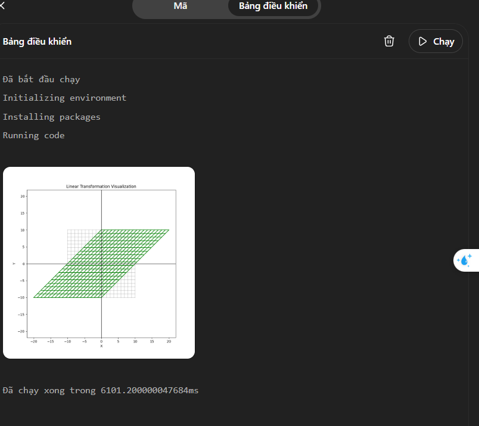

BÁO CÁO THỰC HÀNH: ỨNG DỤNG TRÍ TUỆ NHÂN TẠO TRONG NHIỆM VỤ HỌC TẬP/NGHIÊN CỨU
Họ và tên sinh viên: Cao Doãn Lợi
Mã số sinh viên: 25020249
I. NHIỆM VỤ HỌC TẬP/NGHIÊN CỨU ĐÃ CHỌN
Tên nhiệm vụ: Viết chương trình mô phỏng trực quan các phép biến đổi tuyến tính (Linear Transformations) trong không gian R^2.
Môn học liên quan: Đại số tuyến tính & Lập trình Python.
Bối cảnh & Mục tiêu: Việc thấu hiểu bản chất hình học của các ma trận biến đổi (như ma trận xoay A = matrix( cosθ, -sinθ ; sinθ, cosθ ) ,ma trận co giãn, ma trận trượt) thông qua tính toán tay thường, rất trừu tượng. Mục tiêu của tôi là dùng AI để hỗ trợ viết một đoạn mã Python (sử dụng thư viện NumPy và Matplotlib) nhằm trực quan hóa lưới tọa độ trước và sau khi nhân với một ma trận bất kỳ, giúp việc học Đại số tuyến tính trở nên sinh động và dễ hiểu hơn.
II. KẾ HOẠCH CHI TIẾT SỬ DỤNG AI
1. Các công cụ AI sẽ sử dụng:
- ChatGPT (Mô hình GPT-4o mini / GPT-3.5): Đóng vai trò là "Trợ lý lập trình chính" để tạo khung mã nguồn (boilerplate code) xử lý toán học và vẽ đồ thị.
- Google Gemini: Đóng vai trò "Gia sư toán học" để giải thích và tóm tắt lại các kiến thức nền tảng về ma trận trước khi đưa vào lập trình, nhờ khả năng xử lý tiếng Việt rất tự nhiên.
2. Chiến lược Prompt (Câu lệnh):
Áp dụng kỹ thuật Prompt Engineering với cấu trúc Role (Đóng vai) + Task (Nhiệm vụ cụ thể) + Constraints (Ràng buộc) để định hướng đầu ra chính xác, tránh AI viết code lan man.
3. Quy trình làm việc kết hợp (Human-in-the-loop):
- Bước 1 (Human): Xác định các ma trận cơ bản cần mô phỏng.
- Bước 2 (AI - Gemini): Yêu cầu Gemini hệ thống hóa công thức toán học.
- Bước 3 (AI - ChatGPT): Đưa prompt để tạo mã Python vẽ đồ thị ban đầu.
- Bước 4 (Human): Chạy thử đoạn code.
- Bước 5 (AI & Human): Dùng ChatGPT để debug (sửa lỗi) và con người tự tinh chỉnh các thông số thẩm mỹ (màu sắc lưới, độ dày đường kẻ) để ra sản phẩm cuối cùng.
III. THỰC HIỆN KẾ HOẠCH VÀ GHI LẠI QUÁ TRÌNH
1. Sử dụng Gemini để củng cố lý thuyết toán học
- Prompt đã dùng: "Đóng vai một giảng viên Đại số tuyến tính. Hãy cung cấp cho tôi 3 ma trận 2x2 tiêu biểu nhất để thực hiện phép Xoay (Rotation 45 độ), Phép trượt (Shear theo trục x) và Phép co giãn (Scaling). Trình bày ngắn gọn."
- Kết quả: Gemini cung cấp chính xác 3 ma trận với công thức rõ ràng, giúp tôi có sẵn "test case" (dữ liệu thử nghiệm) chuẩn xác cho bước lập trình.
(Minh chứng: ảnh chụp màn hình tương tác với Gemini)

2. Sử dụng ChatGPT để tạo khung mã nguồn (Boilerplate Code)
- Prompt đã dùng: "Đóng vai một kỹ sư khoa học dữ liệu. Hãy viết một script Python sử dụng NumPy và Matplotlib để trực quan hóa phép biến đổi tuyến tính. Yêu cầu: 1. Có một hàm nhận đầu vào là ma trận 2x2. Vẽ lưới tọa độ ban đầu (màu xám mờ). 3. Vẽ lưới tọa độ sau khi bị biến đổi bởi ma trận (màu xanh lá). 4. Code phải có comment giải thích chi tiết."
- Kết quả: ChatGPT xuất ra một đoạn code hoàn chỉnh, import đủ thư viện và định nghĩa hàm plot_transformation(matrix).
(Minh chứng: ảnh chụp màn hình tương tác với ChatGPT)

3. Đánh giá, chỉnh sửa và tích hợp (Human-AI Collaboration)
- Thách thức gặp phải: Khi chạy code của ChatGPT ma trận Xoay 45*, kết quả hiển thị bị méo. Lưới không còn là hình vuông do tỉ lệ trục x và trục y trên màn hình không bằng nhau (tỉ lệ khung hình mặc định của Matplotlib là hình chữ nhật).
- Cách khắc phục: Thay vì tự tìm tài liệu (Docs) của Matplotlib mất nhiều thời gian, tôi tiếp tục dùng AI với prompt: "Đồ thị vẽ ra bị méo tỉ lệ khung hình khiến phép xoay nhìn không giống hình vuông. Làm sao để ép trục x và trục y có cùng tỉ lệ (aspect ratio bằng 1) trong Matplotlib?". ChatGPT lập tức hướng dẫn thêm dòng lệnh plt.gca().set_aspect('equal'). Tôi tự chèn dòng lệnh này vào và đổi màu lưới cho đẹp mắt hơn.
(Minh chứng: ảnh chụp màn hình ảnh đồ thị đầu ra)

IV. ĐÁNH GIÁ HIỆU QUẢ CỦA VIỆC SỬ DỤNG AI
1. So sánh với phương pháp truyền thống:
- Không dùng AI: Tôi sẽ phải tự vẽ tay trên giấy nháp từng tọa độ vector v = (x, y) nhân với ma trận A, rất mất thời gian. Nếu muốn viết code, tôi phải mở Document của thư viện Matplotlib, mò mẫm cách dùng quiver hoặc plot để vẽ lưới, xử lý các lỗi cú pháp mệt mỏi.
- Có AI hỗ trợ: Trọng tâm học tập chuyển từ việc "vật lộn với công cụ" sang "tư duy giải quyết vấn đề". AI lo phần gõ code cơ bản, tôi tập trung vào việc thử nghiệm các ma trận khác nhau để xem không gian biến đổi ra sao.
2. Phân tích định lượng về thời gian và công sức:
- Thời gian thiết lập (Setup time): Giảm từ mức dự kiến 3-4 tiếng (cho việc tự viết code đồ họa từ con số 0) xuống còn khoảng 45 phút (bao gồm cả thời gian viết prompt, chạy thử và debug). Khối lượng công việc giảm khoảng 70-80%.
- Công sức (Mental Effort): Khắc phục được sự chán nản khi gặp lỗi code (bug), vì AI đóng vai trò như một người "pair-programming" (lập trình cặp) hỗ trợ giải quyết lỗi ngay lập tức.
3. Đánh giá chất lượng sản phẩm cuối cùng:
- Chất lượng mã nguồn đạt tiêu chuẩn cao: Cấu trúc code module hóa tốt, biến số được đặt tên có ý nghĩa, comment đầy đủ giúp dễ dàng bảo trì hoặc mở rộng sau này.
- Chất lượng học tập nâng cao: Nhờ có công cụ trực quan này, tôi đã nắm bắt bản chất của trị riêng, vector riêng và ma trận biến đổi một cách sâu sắc hơn rất nhiều so với việc chỉ học vẹt công thức.
V. KẾT LUẬN
Qua nhiệm vụ này, tôi nhận thấy AI không làm thay công việc của sinh viên, mà nó hoạt động như một bộ "khuếch đại năng lực". Nếu người học có tư duy hệ thống và kỹ năng đặt câu hỏi (Prompting) tốt, AI sẽ giúp đẩy nhanh quá trình hiện thực hóa ý tưởng. Tuy nhiên, kiến thức nền tảng của sinh viên (như nhận biết được hình vẽ bị méo do lỗi trục tọa độ) vẫn là yếu tố quyết định để kiểm định và tối ưu hóa kết quả cuối cùng do AI tạo ra.